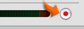

Recording a voiceover
If you have a microphone built in or attached to your computer, you can record a voice to add narration to your movie.
IMPORTANT: Before you begin, check System Preferences to make sure your microphone is selected as the sound input device and the volume level for the microphone is not set too low (choose Apple menu > System Preferences, click Sound, and then click Input). You can turn the recording volume of your microphone up or down by changing the input volume in the Sound pane of System Preferences.

To record a voiceover:
- Click Media, and then click the Audio button at the top of the Media pane.
- Click the Record button (shown above) and speak into your microphone.
- Click the button again to stop recording.
Speak clearly. While you are speaking, the input meter should be yellow. If it turns red, you are speaking too loudly.
The audio clip of your voice appears in the first audio track of the timeline viewer. You can drag the audio clip to align it with the appropriate video clips. For more information on working with audio clips, see Related Topics below.
Tip: If you don't have a microphone, you can use your video camera as a microphone. Record your voiceover with your video camera and import the footage into iMovie HD. Then select the imported clip and choose Advanced > Extract Audio. When the audio appears in a track below the video, you can delete the video track.
Related Topics
Turning the recording level of a microphone up or down
Making your movie louder or softer
Precisely aligning audio to video
 Was this page helpful? Send feedback.
Was this page helpful? Send feedback.